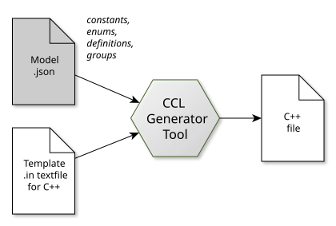

Generated Code
Introduction
Code generation is powered by the CCL Generator command-line tool. This tool can generate source code across multiple programming languages. It transforms a programming language-agnostic data model into language-specific source code files using string template files designed to create specific output formats.
{kind=link}

Example: transform a model and C++ template file into a C++ source code file. A single model can be combined with different template files to generate source files for different programming languages.
The output format is generally a programming language format, but it doesn’t have to be. It can also be any other text-based format, such as HTML, reStructuredText (RST), or XML. Therefore, the CCL Generator tool should be considered a versatile text file generator, rather than exclusively a programming language source code generator.
Example
Model
Here is an example of a model .json file: It defines two constants, one of type int and the other of type string, each with specific values. Note that this file is language-agnostic. The data types should be considered abstract and not tied to any specific programming language.
{
"constants":
[
{
"name": "kIntConst",
"value": "123",
"type": "int"
},
{
"name": "kStringConst",
"value": "foo",
"type": "string"
}
]
}
C++ string template
This is an example string template file, intended to generate a C++ header file. Note the string template special commands {{ ... }}, {% ... %} used as placeholders to insert model data later on:
// This is a demo C++ header file
namespace CCL {
{% for c in constants %}
static const {{ c.type | cpptype }} {{ c.name }} = {{ c.value | cppvalue }};
{% endfor %}
} // CCL
The special filters cpptype and cppvalue are used to transform an inserted value into the language specific counterpart, for example “string” is transformed to “(CCL::)String” for C++.
Tool invocation (C++)
Run the CCL Generator command-line tool with both files as input to render the string template file into an output file constants.h:
$ cclgenerator -g -input constants.json -output constants.h -template constants.h.in
C++ output
// This is a demo C++ header file
namespace CCL {
static const int kIntConst = 123;
static const String kStringConst = "foo";
} // CCL
Java string template
In addition, consider this second template to generate a .java file:
// This is a demo Java file
public class DemoConstants {
{% for c in constants %}
public static final {{ c.type | javatype }} {{ c.name }} = {{ c.value | javavalue }};
{% endfor %}
}
Tool invocation (Java)
$ cclgenerator -g -input constants.json -output DemoConstants.java -template constants.java.in
Java output
// This is a demo Java file
public class DemoConstants {
public static final int kIntConst = 123;
public static final String kStringConst = "foo";
}
Note how altering the template can effortlessly transform the model into language-specific code or any other text-based format.
See also
Please refer to the CCL Generator command-line tool documentation found in the CCL Cross-platform framework section for more details.
Repository setup
CCL Generator files are stored in framework level meta folders. Example, CCL:
core/meta
ccl/meta
Each meta folder typically contains:
meta/models -> model .json files
meta/templates -> string template files (.in)
meta/generated -> generated source files (.h, .java, ...)
[build shell script]
Language specific files are typically organized by language. Examples:
meta/generated/cpp
meta/generated/java
meta/templates/cpp
meta/templates/java
Model .json files are language agnostic, thus not stored per language.
The meta folder contained shell script (generate_all.sh, …) is used to rebuild all generated files by calling the CCL Generator tool for each model and template combination.
Adding new code
Add new code by either extending an existing model or introducing a new model .json file.
Existing model
from
meta/modelspick the model .json file that is the best fitextend model file as needed
in
generate_all.sh, check which string template files are used with the modelcheck if the string template file already handles the added data (like “constants” or “enums”)
if yes: nothing to do
if no: extend the template file
rerun the build script
update client code (include generated code)
check-in updated files
It’s often best practice to design models that contain only constants, enums, or definitions, using templates dedicated to each specific data type for reusability. If a new data type needs to be added, consider creating a separate model for that data type instead of modifying the existing one.
New model
in
meta/models, create a new .json fileadd data to model file as needed
in
meta/templates/[language]…create new template file per target language
optional: check if an existing one can be reused
name template
[model].[language].in
update build shell script
call cclgenerator for each new model and template combination
ensure output file is written to
meta/generated/[language]
run build shell script
add the generated source code file(s) to build system:
cmake configs
TypeScript projects
etc.
update client code (include generated code)
check-in updated files
Guidelines
Here are some general tipps on how to utilize the CCL Generator:
share templates between templates via
{% include ... %}, include path being relative to parent template:daisy chain filters to rename values
// Example: "demoName" -> "demoname" -> "Demoname" {{ c.name | lower | capitalize }}remove CCL constant “k” via
deconstifyfilter:// "kFirst" -> "First" {{ enumerator.name | deconstify }} // "kFirst" -> "first" {{ enumerator.name | deconstify | decapitalize }}templates are whitespace sensitive
avoid empty space before string template
{% %}commandsthus, do not indent nested
{% for ... %}statements
use conditional statements to have more control over output, for example to format documented data differently:
{% if c.brief %} /** {{ c.brief }} */ // {{ c.name }} {% else %} // {{ c.name }} {% endif %}loops can be nested, example: enums -> enumerators
{% for enum in enums %} {% for enumerator in enum.enumerators %} // {{ enumerator.name }} {% endfor %} {% endfor %}nested model data like enums can be flattened by not exporting the parent element and instead adding some of its attributes to the child element, example:
{% for enum in enums %} {% for enumerator in enum.enumerators %} // {{ enum.name }}{{ enumerator.name }} {% endfor %} {% endfor %}… instead of:
{% for enum in enums %} enum {{ enum.name }} {% for enumerator in enum.enumerators %} // {{ enumerator.name }}, {% endfor %} } {% endfor %}elements can be renamed by simply adding prefixes or filters, example:
// "kFirst" -> "MYPREFIX_KFIRST" MYPREFIX_{{ enumerator.name | upper }}for hierarchical structure outside of enums, use model “groups”
{% for g in groups %} {% for c in g.constants %} // This is {{ c.name }} of group {{ group.name }} {% endfor %} {% endfor %}model groups may be defined recursively
model groups, enums, classes and definitions can be repurposed in the output, example
export groups as namespaces
export enums as classes
export enums as separator comments
etc.
do not rename lvalues that may appear as rvalues (rvalues would not be renamed)
for Java output, public classes require a file named after the class